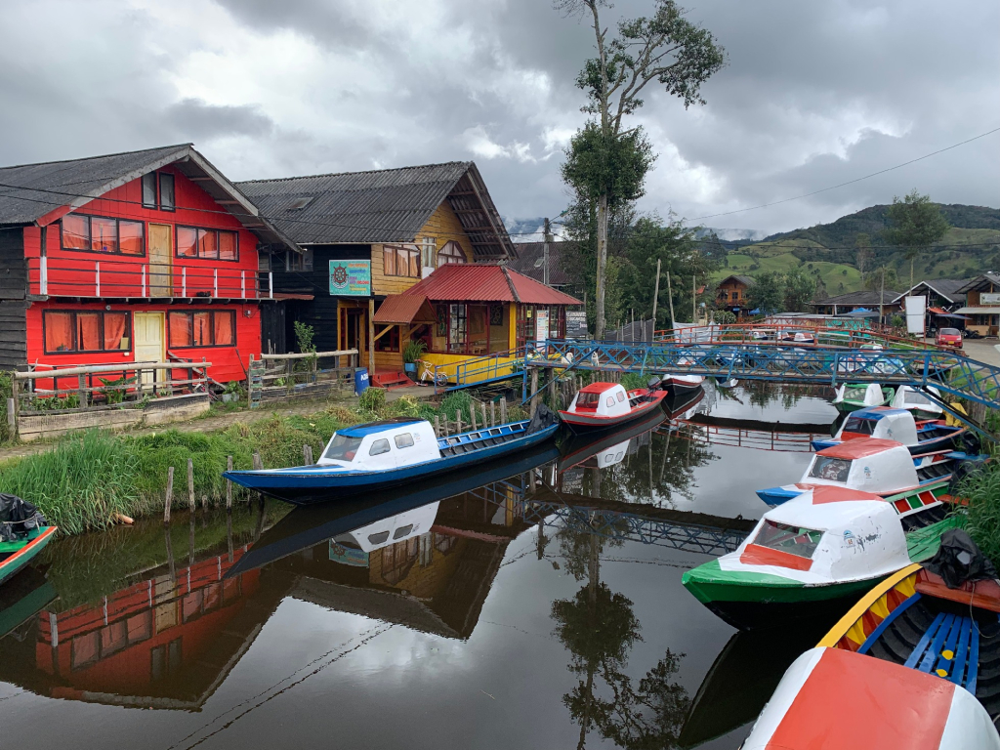
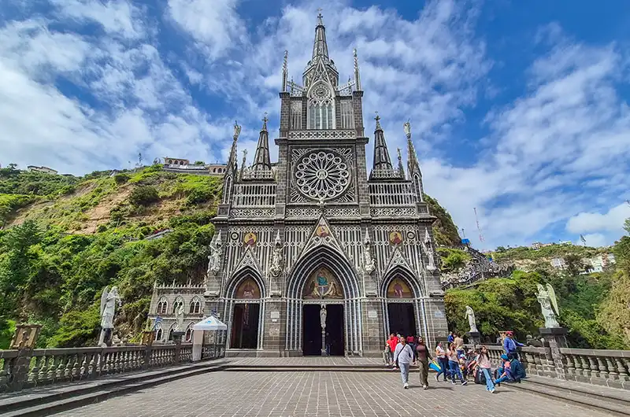
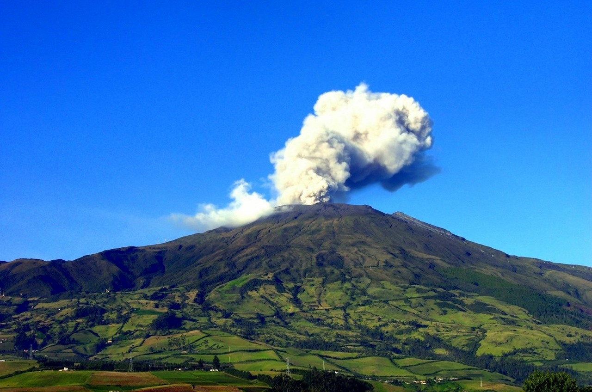
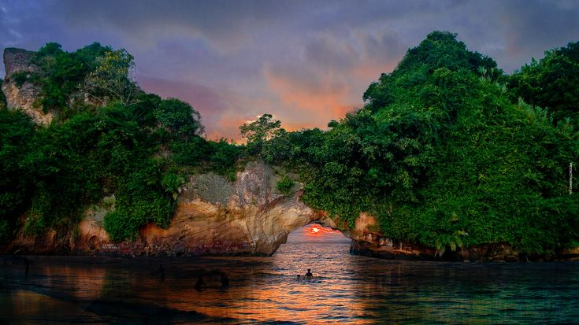
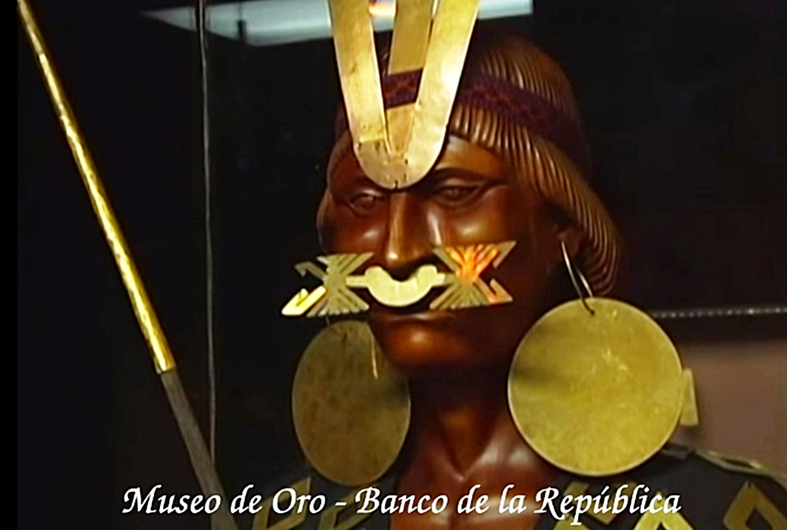
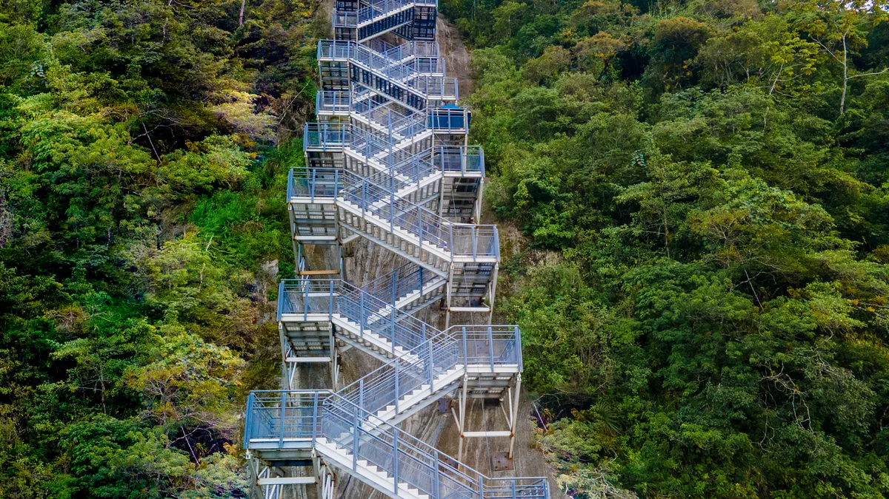

NaturalezaLaguna de La Cocha
El Encano, Pasto, Nariño
Un refugio andino donde las montañas abrazan el agua y la niebla cuenta historias. Descubre el encanto místico del segundo lago más grande de Colombia.
★★★★★ 0.0
$150.000

ReligiosoSantuario de Las Lajas
Ipiales, Nariño
Una joya arquitectónica que desafía el abismo y parece suspendida en el cielo. Déjate maravillar por el templo más hermoso del mundo, tallado en el corazón de un cañón.
★★★★★ 0.0
$155.000

AventuraVolcan galeras
Pasto, Nariño
El Volcán Galeras es uno de los paisajes más representativos de Nariño. Su entorno natural alberga bosques andinos, páramos y una gran diversidad de flora y fauna.
★★★★★ 0.0
$200.000

Playa y costaTumaco
Tumaco, Nariño
Donde la selva se funde con el mar al ritmo de la marimba. Déjate conquistar por la magia ancestral, las playas exóticas y el sabor único del Pacífico nariñense.
★★★★★ 0.0
$180.000

CulturaMuseo del Oro
Pasto, Nariño
Este espacio cultural permite conocer piezas arqueológicas y expresiones artísticas relacionadas con las culturas ancestrales de la región.
★★★★★ 0.0
$40.000

NaturalezaLas Gradas de Belen
Sandona, Nariño
Las Gradas de Belén representan uno de los miradores y paisajes más hermosos de Sandoná, Nariño. Este encantador sendero conecta la tradición artesanal de la región con la majestuosidad de su entorno natural y su famosa cascada.
★★★★★ 0.0
$195.000
Eventos próximos
Vive las tradiciones, los sabores y las celebraciones que llenan de vida a Nariño. Descubre las experiencias culturales que hacen especial a nuestra región.
 Festividad
Festividad
Carnaval de Negros y Blancos
Un desfile lleno de carrozas monumentales hechas a mano, música en vivo, polvos de colores y comparsas tradicionales que recorren las calles.
 Gastronomia
Gastronomia
Festival del Cuy y Cultura Campesina
¿Cuyes disfrazados y el plato más famoso del sur en un solo lugar? Descubre el festival más curioso, alegre y delicioso de la cultura andina.
 Cultura y Musica
Cultura y Musica
Festival Internacional del Currulao
Encuentro puramente cultural donde las cantaoras y los tocadores de marimba, cununos y bombos compiten por mantener vivas las raíces africanas
 Religioso
Religioso
Fiesta de la Virgen del Rosario
Una de las fiestas patronales más masivas del departamento, donde llegan miles de peregrinos de Colombia y Ecuador a bailar y cumplir promesas.
 Cultura y Musica
Cultura y Musica
Festival de Musica de Cuerdas
Música andina en vivo con tiples, bandolas y guitarras. Siente el ritmo y el gran nivel de los músicos de nuestra región.
¿Tienes un negocio turístico en Nariño?
Si tienes una iniciativa que represente la identidad de Nariño y sus riquezas culturales y turísticas, contáctanos. Nos interesa conocer propuestas que contribuyan a dar mayor visibilidad a nuestra región.
Contáctanos¡Bienvenido de nuevo!
Inicia sesión para continuar o crea una cuenta para comenzar.